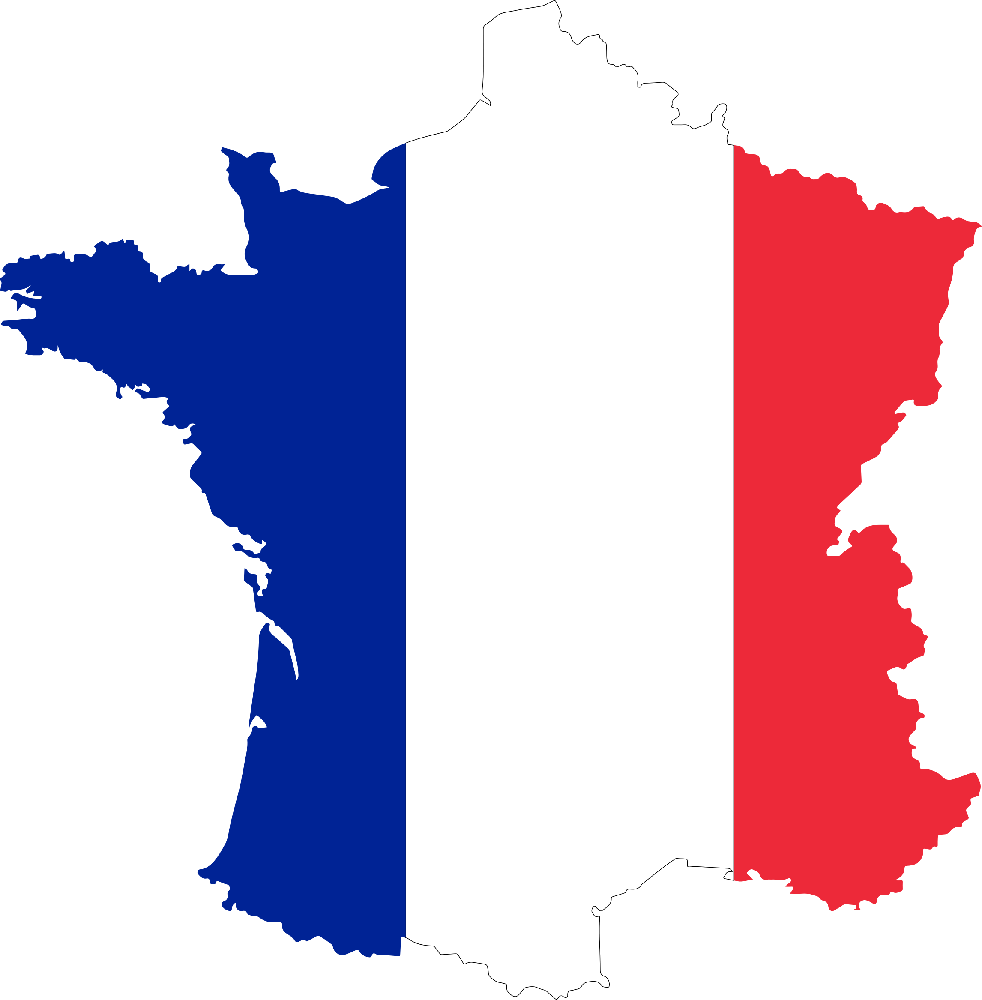

Unapeli
Unapeli
Bienvenidx a Unapeli
Rompe la monotonía con películas aleatorias. Sin cronogramas predecibles, solo una
película a la vez que cambia sin avisar. ¿Estás listo para la aventura cinematográfica del
azar? ¡Dale play nomas!
- Titulo:la vida de Adelle
- sinopsis: Adèle es una estudiante de secundaria introvertida de 15 años de edad.17 Al cruzar la calle un día pasa junto a una mujer con el pelo corto azul y se siente atraída al instante. Más tarde tiene citas y mantiene relaciones sexuales con un chico del instituto llamado Thomas pero finalmente, insatisfecha, y rompe su relación. Después de tener vívidas fantasías sobre la mujer que vio en la calle y que una de sus amigas la besó, se preocupa por su orientación sexual .
- Pais: Francia
- Director:
Abdellatif Kechiche